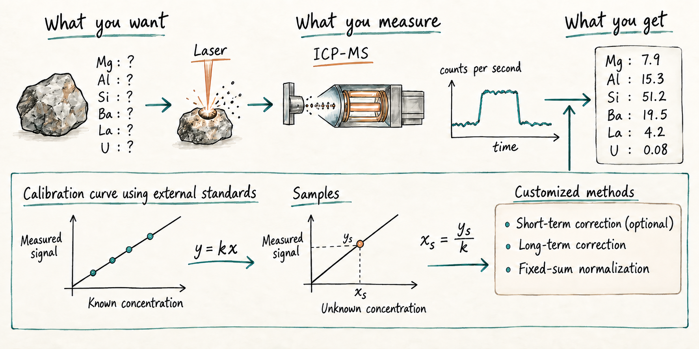

Workflow mismatch
Existing programs did not support the laboratory’s customized data-reduction method.
I designed and developed a cross-platform desktop application that converts raw LA-ICP-MS count files into configurable, reviewable, and export-ready results. The application has processed approximately 20,000 analyses and has supported all LA-ICP-MS data reduction in the lab since 2024.
The narrated walkthrough below demonstrates a complete reduction session, from data import and calibration review to CSV export. For the clearest view of interface details, use the full-screen control.

Reference: Yu, Chen, & Langmuir — AGU 2024 abstract; Chen & Langmuir — Goldschmidt 2018 abstract
Why this software was needed
Existing programs did not support the laboratory’s customized data-reduction method.
Manual processing took half a day to a full day, depending on the researcher’s familiarity and tools. It was also difficult to standardize across users and cumbersome to repeat.
External software development would have been expensive and harder to maintain as scientific requirements evolved.
I designed the interface, implemented the reduction logic, connected configuration to visual quality checks, and packaged the program so researchers could run it on macOS or Windows without installing Python.
The result is a flexible tool that makes analytical choices visible, produces consistent outputs, and can be maintained and debugged directly as laboratory needs change. A data reduction that previously required half a day to a full day now takes approximately 2–5 minutes.
To verify the function of the program, I manually reduced several analytical batches and compared the results with the application output. The results were identical, and the comparison was independently checked by another member of the lab.
The current application contains 2,844 lines of Python code and uses Tkinter, NumPy, pandas, Matplotlib, SciPy, scikit-learn, Pillow, natsort, and adjustText. PyInstaller packages the software as standalone macOS and Windows applications. The private source code is available upon request.
Researchers select external standards, internal standards, isotopes, and calculation options through the interface.
Count-rate plots and calibration curves let users inspect data before accepting the final calculation.
The same structured process is applied across analyses, with raw and final tables available for review and export.
The application is packaged for macOS and Windows so end users do not need a programming environment.
I am a PhD-trained quantitative geoscientist and Harvard postdoctoral researcher. My work combines geochemistry, scientific modeling, data analysis, and machine-learning techniques, when applicable, to solve real-world problems.
Contact Mingzhen